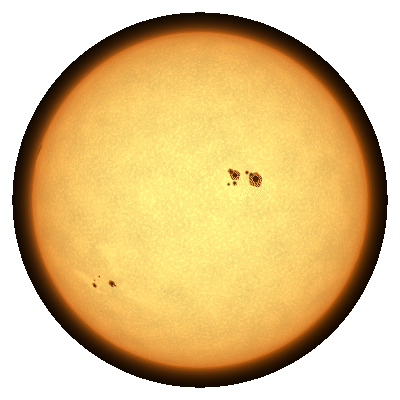

Our Sun is a 4.5 billion-year-old yellow dwarf star – a hot glowing ball of hydrogen and helium – at the center of our solar system. It’s about 93 million miles (150 million kilometers) from Earth and it’s our solar system’s only star. Without the Sun’s energy, life as we know it could not exist on our home planet.
From our vantage point on Earth, the Sun may appear like an unchanging source of light and heat in the sky. But the Sun is a dynamic star, constantly changing and sending energy out into space. The science of studying the Sun and its influence throughout the solar system is called heliophysics.
The Sun is the largest object in our solar system. Its diameter is about 865,000 miles (1.4 million kilometers). Its gravity holds the solar system together, keeping everything from the biggest planets to the smallest bits of debris in orbit around it.
Even though the Sun is the center of our solar system and essential to our survival, it’s only an average star in terms of its size. Stars up to 100 times larger have been found. And many solar systems have more than one star. By studying our Sun, scientists can better understand the workings of distant stars.
The hottest part of the Sun is its core, where temperatures top 27 million °F (15 million °C). The part of the Sun we call its surface – the photosphere – is a relatively cool 10,000 °F (5,500 °C). In one of the Sun’s biggest mysteries, the Sun’s outer atmosphere, the corona, gets hotter the farther it stretches from the surface. The corona reaches up to 3.5 million °F (2 million °C) – much, much hotter than the photosphere.
The Sun has been called by many names. The Latin word for Sun is “sol,” which is the main adjective for all things Sun-related: solar. Helios, the Sun god in ancient Greek mythology, lends his name to many Sun-related terms as well, such as heliosphere and helioseismology.
Potential for Life
The Sun could not harbor life as we know it because of its extreme temperatures and radiation. Yet life on Earth is only possible because of the Sun’s light and energy.
Size and Distance
Our Sun is a medium-sized star with a radius of about 435,000 miles (700,000 kilometers). Many stars are much larger – but the Sun is far more massive than our home planet: it would take more than 330,000 Earths to match the mass of the Sun, and it would take 1.3 million Earths to fill the Sun's volume.
The Sun is about 93 million miles (150 million kilometers) from Earth. Its nearest stellar neighbor is the Alpha Centauri triple star system: red dwarf star Proxima Centauri is 4.24 light-years away, and Alpha Centauri A and B – two sunlike stars orbiting each other – are 4.37 light-years away. A light-year is the distance light travels in one year, which equals about 6 trillion miles (9.5 trillion kilometers).
Orbit and Rotation
The Sun is located in the Milky Way galaxy in a spiral arm called the Orion Spur that extends outward from the Sagittarius arm.
The Sun orbits the center of the Milky Way, bringing with it the planets, asteroids, comets, and other objects in our solar system. Our solar system is moving with an average velocity of 450,000 miles per hour (720,000 kilometers per hour). But even at this speed, it takes about 230 million years for the Sun to make one complete trip around the Milky Way.
The Sun rotates on its axis as it revolves around the galaxy. Its spin has a tilt of 7.25 degrees with respect to the plane of the planets’ orbits. Since the Sun is not solid, different parts rotate at different rates. At the equator, the Sun spins around once about every 25 Earth days, but at its poles, the Sun rotates once on its axis every 36 Earth days.
Moons
As a star, the Sun doesn’t have any moons, but the planets and their moons orbit the Sun.
Rings
The Sun would have been surrounded by a disk of gas and dust early in its history when the solar system was first forming, about 4.6 billion years ago. Some of that dust is still around today, in several dust rings that circle the Sun. They trace the orbits of planets, whose gravity tugs dust into place around the Sun.
Formation
The Sun formed about 4.6 billion years ago in a giant, spinning cloud of gas and dust called the solar nebula. As the nebula collapsed under its own gravity, it spun faster and flattened into a disk. Most of the nebula's material was pulled toward the center to form our Sun, which accounts for 99.8% of our solar system’s mass. Much of the remaining material formed the planets and other objects that now orbit the Sun. (The rest of the leftover gas and dust was blown away by the young Sun's early solar wind.)
Like all stars, our Sun will eventually run out of energy. When it starts to die, the Sun will expand into a red giant star, becoming so large that it will engulf Mercury and Venus, and possibly Earth as well. Scientists predict the Sun is a little less than halfway through its lifetime and will last another 5 billion years or so before it becomes a white dwarf.
Structure
The Sun is a huge ball of hydrogen and helium held together by its own gravity.
The Sun has several regions. The interior regions include the core, the radiative zone, and the convection zone. Moving outward – the visible surface or photosphere is next, then the chromosphere, followed by the transition zone, and then the corona – the Sun’s expansive outer atmosphere.
Once material leaves the corona at supersonic speeds, it becomes the solar wind, which forms a huge magnetic "bubble" around the Sun, called the heliosphere. The heliosphere extends beyond the orbit of the planets in our solar system. Thus, Earth exists inside the Sun’s atmosphere. Outside the heliosphere is interstellar space.
The core is the hottest part of the Sun. Nuclear reactions here – where hydrogen is fused to form helium – power the Sun’s heat and light. Temperatures top 27 million °F (15 million °C) and it’s about 86,000 miles (138,000 kilometers) thick. The density of the Sun’s core is about 150 grams per cubic centimeter (g/cm³). That is approximately 8 times the density of gold (19.3 g/cm³) or 13 times the density of lead (11.3 g/cm³).
Energy from the core is carried outward by radiation. This radiation bounces around the radiative zone, taking about 170,000 years to get from the core to the top of the convection zone. Moving outward, in the convection zone, the temperature drops below 3.5 million °F (2 million °C). Here, large bubbles of hot plasma (a soup of ionized atoms) move upward toward the photosphere, which is the layer we think of as the Sun's surface.
Surface
The Sun doesn’t have a solid surface like Earth and the other rocky planets and moons. The part of the Sun commonly called its surface is the photosphere. The word photosphere means "light sphere" – which is apt because this is the layer that emits the most visible light. It’s what we see from Earth with our eyes. (Hopefully, it goes without saying – but never look directly at the Sun without protecting your eyes.)
Although we call it the surface, the photosphere is actually the first layer of the solar atmosphere. It's about 250 miles thick, with temperatures reaching about 10,000 degrees Fahrenheit (5,500 degrees Celsius). That's much cooler than the blazing core, but it's still hot enough to make carbon – like diamonds and graphite – not just melt, but boil. Most of the Sun's radiation escapes outward from the photosphere into space.
Atmosphere
Above the photosphere is the chromosphere, the transition zone, and the corona. Not all scientists refer to the transition zone as its own region – it is simply the thin layer where the chromosphere rapidly heats and becomes the corona. The photosphere, chromosphere, and corona are all part of the Sun’s atmosphere. (The corona is sometimes casually referred to as “the Sun’s atmosphere,” but it is actually the Sun’s upper atmosphere.)
The Sun’s atmosphere is where we see features such as sunspots, coronal holes, and solar flares.
Visible light from these top regions of the Sun is usually too weak to be seen against the brighter photosphere, but during total solar eclipses, when the Moon covers the photosphere, the chromosphere looks like a fine, red rim around the Sun, while the corona forms a beautiful white crown ("corona" means crown in Latin and Spanish) with plasma streamers narrowing outward, forming shapes that look like flower petals.
In one of the Sun’s biggest mysteries, the corona is much hotter than the layers immediately below it. (Imagine walking away from a bonfire only to get warmer.) The source of coronal heating is a major unsolved puzzle in the study of the Sun.
Magnetosphere
The Sun generates magnetic fields that extend out into space to form the interplanetary magnetic field – the magnetic field that pervades our solar system. The field is carried through the solar system by the solar wind – a stream of electrically charged gas blowing outward from the Sun in all directions. The vast bubble of space dominated by the Sun’s magnetic field is called the heliosphere. Since the Sun rotates, the magnetic field spins out into a large rotating spiral, known as the Parker spiral. This spiral has a shape something like the pattern of water from a rotating garden sprinkler.
The Sun doesn't behave the same way all the time. It goes through phases of high and low activity, which make up the solar cycle. Approximately every 11 years, the Sun’s geographic poles change their magnetic polarity – that is, the north and south magnetic poles swap. During this cycle, the Sun's photosphere, chromosphere, and corona change from quiet and calm to violently active.
The height of the Sun’s activity cycle, known as solar maximum, is a time of greatly increased solar storm activity. Sunspots, eruptions called solar flares, and coronal mass ejections are common at solar maximum. The latest solar cycle – Solar Cycle 25 – started in December 2019 when solar minimum occurred, according to the Solar Cycle 25 Prediction Panel, an international group of experts co-sponsored by NASA and NOAA. Scientists now expect the Sun’s activity to ramp up toward the next predicted maximum in July 2025.
Solar activity can release huge amounts of energy and particles, some of which impact us here on Earth. Much like weather on Earth, conditions in space – known as space weather – are always changing with the Sun’s activity. "Space weather" can interfere with satellites, GPS, and radio communications. It also can cripple power grids, and corrode pipelines that carry oil and gas.
The strongest geomagnetic storm on record is the Carrington Event, named for British astronomer Richard Carrington who observed the Sept. 1, 1859, solar flare that triggered the event. Telegraph systems worldwide went haywire. Spark discharges shocked telegraph operators and set their telegraph paper on fire. Just before dawn the next day, skies all over Earth erupted in red, green, and purple auroras – the result of energy and particles from the Sun interacting with Earth’s atmosphere. Reportedly, the auroras were so brilliant that newspapers could be read as easily as in daylight. The auroras, or Northern Lights, were visible as far south as Cuba, the Bahamas, Jamaica, El Salvador, and Hawaii.
Another solar flare on March 13, 1989, caused geomagnetic storms that disrupted electric power transmission from the Hydro Québec generating station in Canada, plunging 6 million people into darkness for 9 hours. The 1989 flare also caused power surges that melted power transformers in New Jersey.
In December 2005, X-rays from a solar storm disrupted satellite-to-ground communications and Global Positioning System (GPS) navigation signals for about 10 minutes.
NOAA’s Space Weather Prediction Center monitors active regions on the Sun and issues watches, warnings, and alerts for hazardous space weather events.